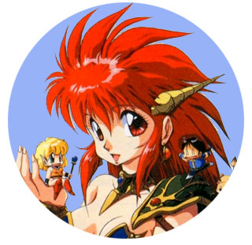

-
Alternative Names: Dragon-Half
Author(s): Ryuusuke Mita
Genres: Adventure, Comedy, Ecchi, Fantasy, Shounen
Release: 1988
Status: Complete
Type:Manga
Length: 7 Volumes 66 Chapters
Read Online @:

More Infor @:

Notes
When a half-dragon half-human girl gets a huge crush on a human idol/dragon slayer, she goes on a quest to find a way to become fully human. The scenes with her parents are hillarious, human dad dragon mom...kinda makes you wonder how the daughter came about...hmm